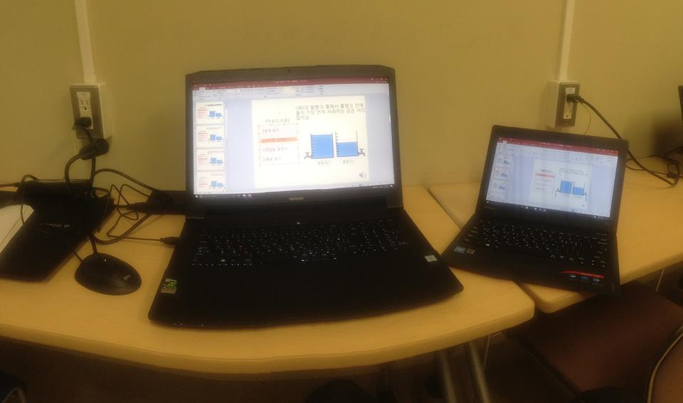
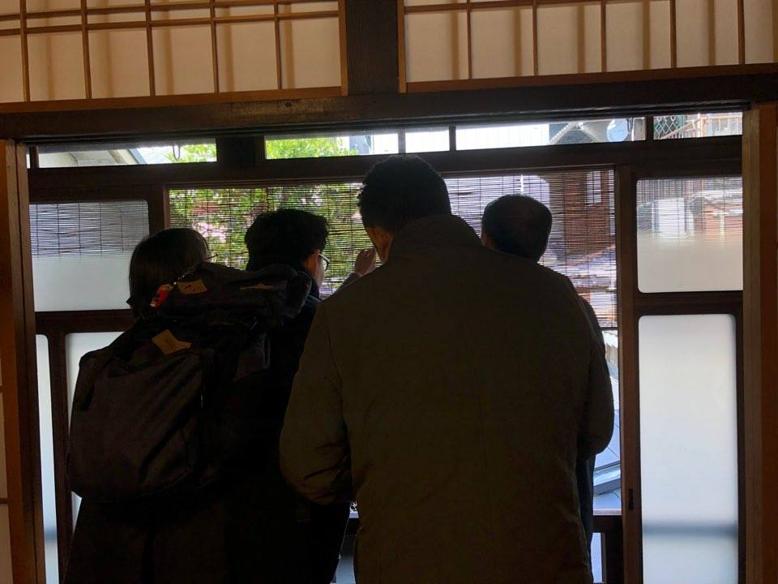
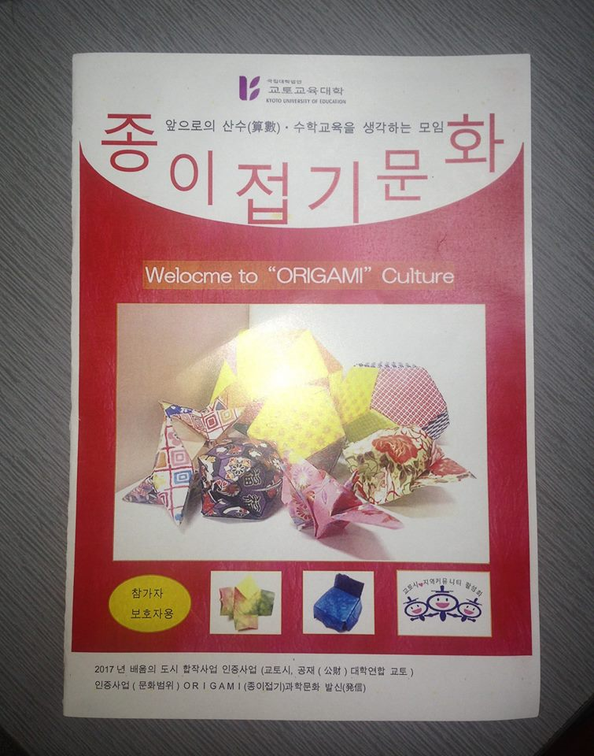
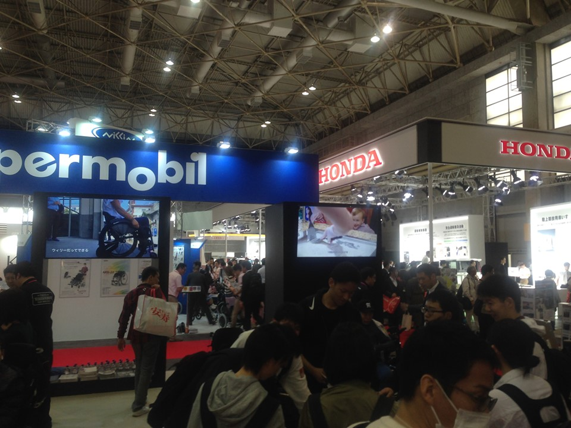
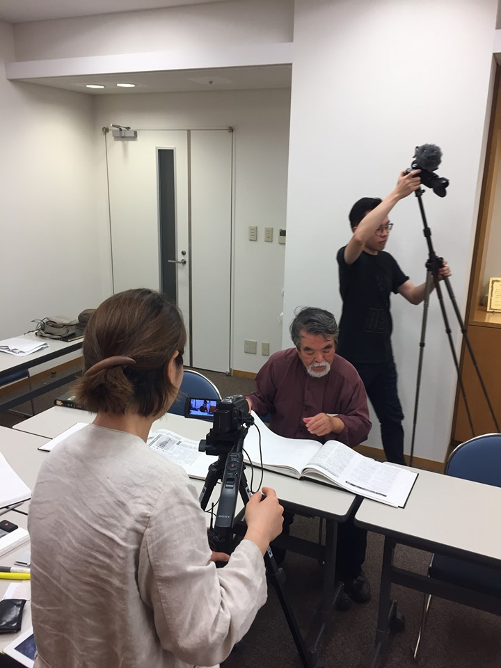

교토교육대학에서 子供夢基金NPO단체에서 진행하는 외국인 어린이 교육을 진행중입니다. 자세히 말하자면 일본어가 불가능한 어린아이들을 위해 모국어로 수학문제를 번역해 공부 할 수 있는 환경을 만들어주는 프로젝트 입니다. 유튜브에 京都教育大学라 검색하시면 제가 번역하고 녹음한 많은 수학문제 콘텐츠를 보실 수 있습니다.
2018.12.20~21일까지 진행한 더불어민주당•자유한국당 종로구의원 두 분이 종로구 북촌한옥마을의 전통과 거주 환경을 지키기 위해 교토에 있는 전통가옥의 주거환경, 교토시의 전통주거정책을 배우로 오셨습니다.
2018년 한국교육부에서 선정한 초,중,고,대학의 우수 교인들이 일본대학에 교육연수를 받으러 오셨습니다. 그에 따라서 번역한 책자입니다~ 책자의 내용은 매우 흥미로운데요 그중 한 구절을 인용해보면 우리가 어릴적 부터 접었던 "학종이"가 일본 에도시대때 만들어진 작품이라고 하네요~
오사카 인텍스 의료기기 박람회 (2019.4.19) 일본의 의료기기를 벤치마킹및 시장조사 하기 위해 한국의 중소기업에서 박람회에방문 하셨습니다. 정말 다양한 의료기기제품들이 있었으며 주된 질문들은 1. 의료기기구입시 간호보험의 혜택을 받아 저렴하게 구입가능한가 2. 한국으로 수출하고 있는가?하지 않는다면 이유가 무엇인가 3. 의료기기의 소재는 친환경적인가 4. 가격은 얼마인가/제품의 특징 등등 수많은 부스를 돌아다니며13:00-16:00 총 3시간 가량 박람회에서 통역을 진행 하였습니다.
2019.6.15 한국에서 오신 정재연미술가님의 통역을 진행하였습니다. 1, 배경 2,작업내용 3,인터뷰질문 (배경) 미술가님이 어릴적 방문했던 국립중앙박물관(구 조선총독부)에 대한 기억과 건물의 공적 기록의 간극에서 시작됨. 그 간극에서 발생하는 복합적인 감정들(아름다운 건물로 남아있으나 아름답다고 하기에는 뼈아픈 과거를 간직한 건물)을 영상과 설치 작업으로 표현하고자 일본 현지 조사차원에서 일본에 오심. (작업내용) 조선총독부에 관한 논문에서 “메이지건축연구회”가 인용됨에따라 대표인 시바다씨를 찾아가 인터뷰하기로 결정함 따라서 나는 미술가님에게 받은 전화번호로 시바다씨에게 연락하여 인터뷰 승낙을 받음 원활한 통역을 위해 1편의 논문과 2차례 미술과님과의 사전미팅으로 지식습득 (인터뷰질문) 1. 구 조선총독부에 방문해 본 적이 있는가? 2.비공개 3.비공개 4.비공개 5.비공개 6.비공개 7.비공개 8.비공개 9.비공개 